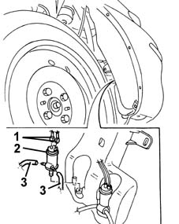
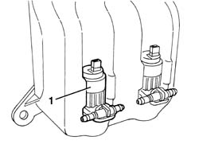

5050B22 FRONT AND REAR SCREEN WASHER PUMP - R+R
- Path
- Procedures > 50 AUXILIARY UNITS > 5050 SCREEN WASHERS AND HEADLAMP WASH/WIPE > 5050B WINDSCREEN WASH/WIPE > 5050B22 FRONT AND REAR SCREEN WASHER PUMP - R+R
- Kind
- repair procedure (removal / refitting; the operation number is the code)
- Applies to
- all engines; all production periods
- Interactive page
- https://sloeber94.github.io/elrnDB-fMltpl/en/#/2891845
Applies to: all engines; production: fino a 05/99, da 09/03, da 06/99 a 03/02, da 04/02 a 08/03, fino a 05/04
 Removing
Removing
 Refitting
RefittingRaise the vehicle in the area of the right front wheel.
1. Disconnect the electrical connection for the electric pump.
 | Name | Connector |
|---|---|---|
1 | Windscreen/rear window pump motor |
2. Remove the electric pump and recover the fluid.
3. Disconnect the fluid supply pipes from the electric pump.

Applies to: all engines; production: fino a 05/99, da 09/03, da 06/99 a 03/02, da 04/02 a 08/03, fino a 05/04
Refitting
RemovingCheck that the electric pump is not damaged and, if necessary, conduct an electrical test on it.
Connect the fluid supply pipes to the electric pump.
Fit the electric pump in the housing.
Connect the electrical connection to the electric pump.
Refill the reservoir.
Test the operation of the windscreen washer.
Lower the vehicle.
Applies to: all engines; production: da 06/04
Removing
RefittingOp. 7055B42 LH OR RH REFLECTOR(ONE) ON REAR BUMPERS - R R
Op. 7055B66 ENGINE COMPARTMENT DUST SHIELD PROTECTION IN RIGHT FRONT WHEEL ARCH - R.R.
Op. 5050A10 WINDSCREEN WASHER FLUID RESERVOIR (IN ENGINE BAY) - R+R
- Release the pump and collect the fluid.

Applies to: all engines; production: da 06/04
Refitting
Removing- Check that the pump is not damaged and that it is working properly.
- Place the pump in position.
Op. 7055B46 MUDGUARD ON WHEELARCH ONE LEFT OR RIGHT R R
Op. 7055B66 ENGINE COMPARTMENT DUST SHIELD PROTECTION IN RIGHT FRONT WHEEL ARCH - R.R.
Op. 5050A10 WINDSCREEN WASHER FLUID RESERVOIR (IN ENGINE BAY) - R+R
Topics linked from this page (4)
- 5050A10 WINDSCREEN WASHER FLUID RESERVOIR (IN ENGINE BAY) - R+R
- 7055B42 Additional FRONT WHEEL ARCH (one), left or right - R.R.
- 7055B66 ENGINE COMPARTMENT DUST SHIELD PROTECTION IN RIGHT FRONT WHEEL ARCH - R.R.
- N22 Windscreen/rear window pump motor